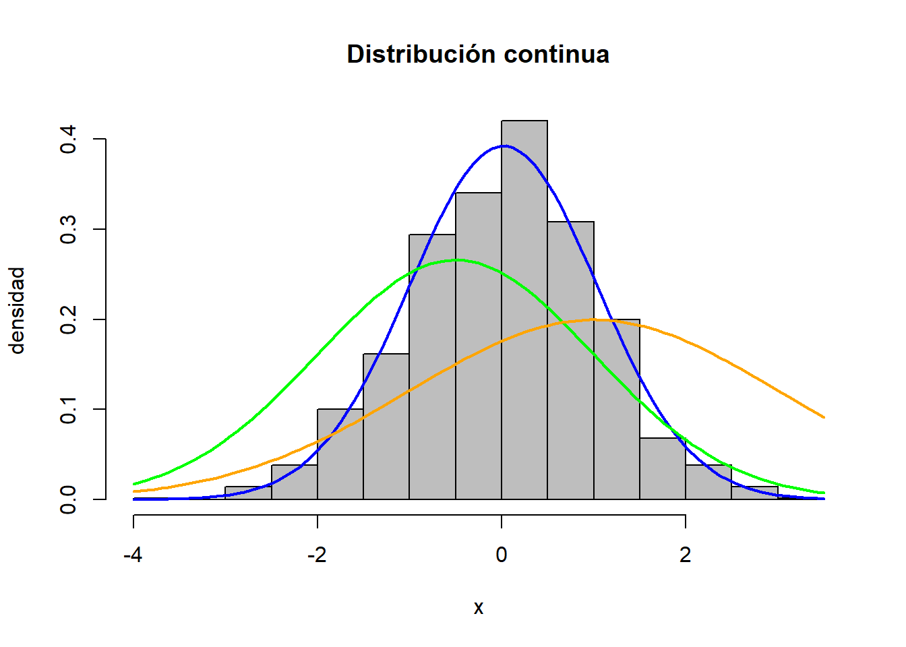
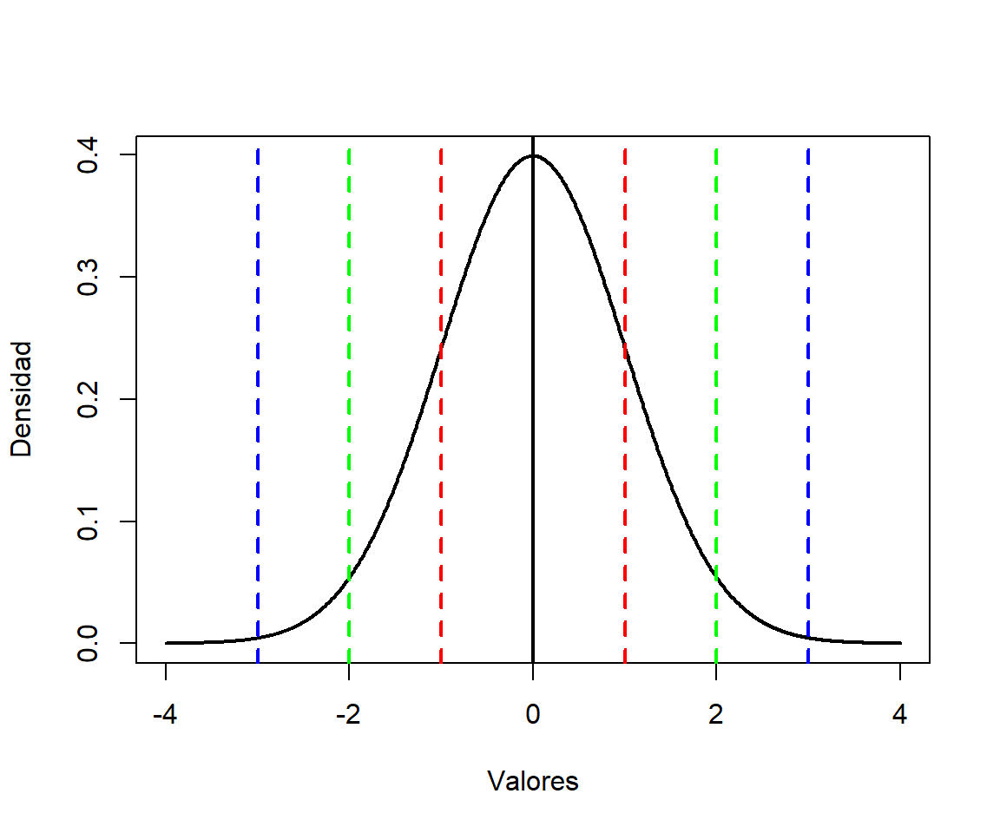
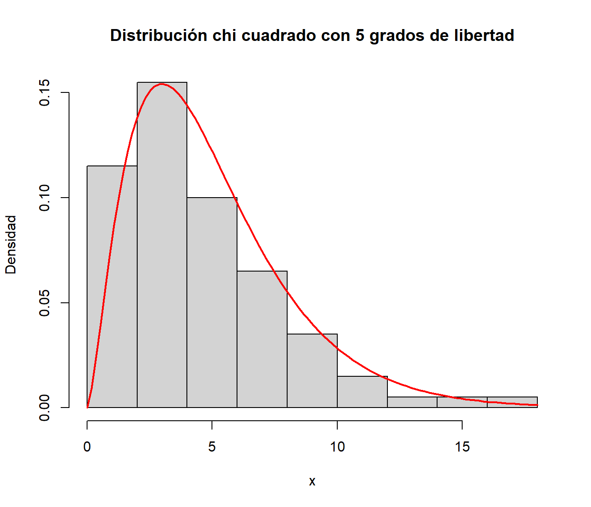
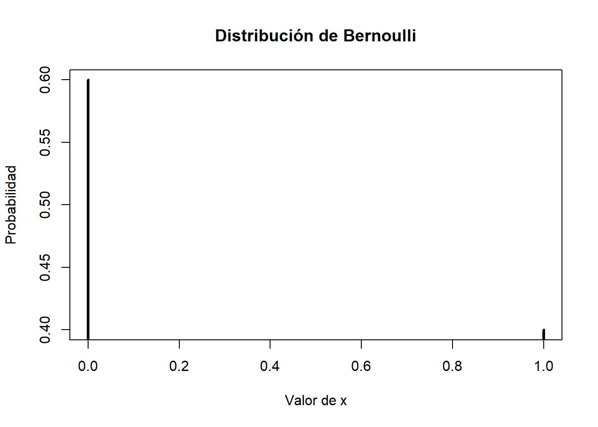
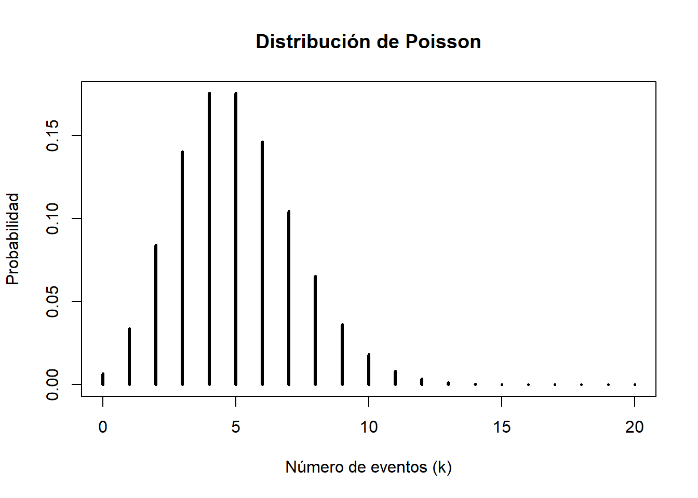

¡Bienvenidos al curso “Midiendo Abundancia”! En este curso aprenderás los métodos y técnicas más comunes para estimar el tamaño de las poblaciones y la riqueza de especies. Entender la abundancia de las especies es fundamental para la conservación y gestión adecuada de los ecosistemas, y esperamos que este curso te brinde las herramientas necesarias para llevar a cabo tus propias investigaciones y proyectos en el campo de la biología de la conservación y ecología.
Recopilar información sobre una población o comunidad de organismos.
El objetivo es poder hacer inferencias de las poblaciones o comunidades de organismos.
Algunas técnicas son los muestreos por cuadrantes o parcelas, los muestreos por captura-recaptura, entre otros.
1.2 Muestreo estadistico
Se basa en la teoría estadística y utiliza métodos estadísticos para hacer inferencias sobre una población a partir de la información obtenida de una muestra.
1.2.1 Media muestral
Representa el valor promedio de un conjunto de datos
\[\bar{x} = \frac{1}{n} \sum_{i=1}^{n} x_i\]
Ejemplo 1.1 Californian Douglas Firs
Douglas Firs (Pseudotsuga menziesii) fue estudiando en Santa Cruz Forest Ecology Research Plot.
La figura 1.1 muestra la region de estudio devidida en cien grillas de 4x4 metros, con los datos de conteos reportados en el diagrama de la derecha.
Es una medida estadística que indica cuánto se desvían los valores de una muestra con respecto a su media, en promedio.
Es la raíz cuadrada de la varianza de la muestra.
1.2.4 El coeficiente de variación (CV)
Se define como la desviación estándar de una muestra dividida por la media de la muestra, y se expresa como un porcentaje.
1.3 Distribuciones continuos comunes
Una distribución continua es un tipo de distribución de probabilidad en la que las variables pueden tomar cualquier valor en un rango continuo. Esto significa que la probabilidad de que una variable tome cualquier valor específico es cero.
datos_normales <-rnorm(1000)media_normal <-mean(datos_normales)desviacion_estandar_normal <-sd(datos_normales)hist(datos_normales, breaks =20, freq =FALSE, col ="gray", main ="Distribución continua", ylab ="densidad", xlab ="x")curve(dnorm(x, mean = media_normal, sd = desviacion_estandar_normal), col ="blue", lwd =2, add =TRUE)curve(dnorm(x, mean =-0.5, sd =1.5), col ="green", lwd =2, add =TRUE)curve(dnorm(x, mean =1, sd =2), col ="orange", lwd =2, add =TRUE)

1.3.1 Distribución normal
La regla empírica (también conocida como la regla de las tres sigmas) establece que en una distribución normal:
Aproximadamente el 68% de los datos se encuentran dentro de una desviación estándar de la media (es decir, en el rango μ ± σ).
Aproximadamente el 95% de los datos se encuentran dentro de dos desviaciones estándar de la media (en el rango μ ± 2σ).
Aproximadamente el 99.7% de los datos se encuentran dentro de tres desviaciones estándar de la media (en el rango μ ± 3σ).
# Generar valores de la distribución normalx <-seq(-4, 4, length.out =1000)y <-dnorm(x, mean =0, sd =1)# Crear el gráficoplot(x, y, type ="l", lwd =2, xlab ="Valores", ylab ="Densidad")# Dibujar las líneas de 1, 2 y 3 desviaciones estándarabline(v =0, lty =1, lwd =2, col =c("black"))abline(v =c(-1, 1), lty ="dashed", lwd =2, col =c("red"))abline(v =c(-2, 2), lty ="dashed", lwd =2, col =c("green"))abline(v =c(-3, 3), lty ="dashed", lwd =2, col =c("blue"))

1.3.1 Distribución chi cuadrado
Es asimétrica y tiene una sola cola. La forma de la distribución depende del número de grados de libertad k.
A medida que k aumenta, la distribución chi cuadrado se aproxima a una distribución normal
k se refiere al número de grados de libertad
# Generar una muestra aleatoria de la distribución chi cuadrado con 5 grados de libertadx <-rchisq(100, df =5)# Visualizar la distribuciónhist(x, breaks =10, prob =TRUE,main ="Distribución chi cuadrado con 5 grados de libertad",xlab ="x", ylab ="Densidad")# Dibujar la curva de la distribución teóricacurve(dchisq(x, df =5), add =TRUE, col ="red", lwd =2)

1.4 Distribuciones de probabilidad discretas comunes
Solo pueden tomar valores enteros.
La distribución de Bernoulli es una distribución de probabilidad discreta que describe el resultado de un experimento aleatorio que solo puede tener dos posibles resultados: éxito o fracaso.
Distribución de Poisson: se utiliza para modelar el número de eventos raros que ocurren en un intervalo de tiempo o espacio fijo.
1.4.1 Distribución de Bernoulli
Solo dos valores: 0 y 1
La probabilidad de que el resultado sea 1, se denota por p
La media es p y la varianza p(1 - p)
Utilizada en los modelos de presencia/ausencia
# Distribución de Bernoullip <-0.4# Probabilidad de éxitoprob_bernoulli <-dbinom(0:1, size =1, prob = p) # Probabilidades de Bernoulliplot(0:1, prob_bernoulli, type ="h", lwd =3, main ="Distribución de Bernoulli",xlab ="Valor de x", ylab ="Probabilidad")

1.4.2 La distribución de Poisson
\[P(X = k) = \frac{e^{-\lambda} \lambda^k}{k!}\]
Donde X es la variable aleatoria que sigue una distribución de Poisson con parámetro lambda y k es el número de veces que ocurre el evento en el intervalo de tiempo o espacio específico. La función e^-lambda representa la constante matemática e elevada a la potencia negativa de lambda, y k! es el factorial de k.
# Distribución de Poissonlambda <-5# Parámetro lambdak <-0:20# Valores de k para calcular la probabilidadprob_poisson <-dpois(k, lambda) # Probabilidades de Poissonplot(k, prob_poisson, type ="h", lwd =3, main ="Distribución de Poisson",xlab ="Número de eventos (k)", ylab ="Probabilidad")

1.6 Estimaciones e Inferencia
La estimación es el proceso de calcular un valor desconocido de una población a partir de una muestra aleatoria de esa población.
La inferencia, es el proceso de hacer predicciones o tomar decisiones a partir de datos.
1.6.1 Error standard
Es una medida de la variabilidad en la media muestral de una población
El error estándar se calcula dividiendo la desviación estándar de la población (o la desviación estándar estimada de la población) por la raíz cuadrada del tamaño de la muestra
\[ es = s/\sqrt(n) \]
Cuanto mayor sea el tamaño de la muestra, menor será el error estándar, lo que significa que la media muestral tendrá menos variabilidad y será una mejor estimación de la media poblacional.
1.6.2 Intervalos de confianza
Un intervalo de confianza es un rango de valores que, con cierto nivel de confianza, se espera que contenga el verdadero valor de un parámetro poblacional.
\[(\bar{x} - c * s/\sqrt(n) ; \bar{x} + c * s/\sqrt(n) ) \]
Para el intervalo de confianza del 95%, c = 1.96
Para el intervalo de confianza del 90%, c = 1.645
1.6.3 Intervalos Bootstrap
Los intervalos Bootstrap son un método de estimación no paramétrico utilizado para obtener intervalos de confianza para una estadística de interés a partir de una muestra.
Se basa en crear múltiples muestras de la población original mediante muestreo con reemplazo y calcular la estadística de interés para cada muestra. A partir de estas estadísticas se construye el intervalo de confianza.
1.6.4 La función de verosimilitud (likelihood function)
Es una función que describe la probabilidad de observar un conjunto de datos dada una cierta hipótesis o modelo estadístico con parámetros desconocidos.
La función de verosimilitud mide cuán bien los parámetros de un modelo explican los datos observados.